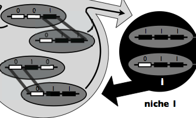
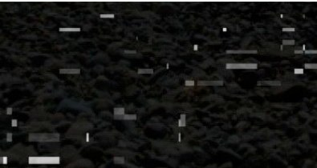
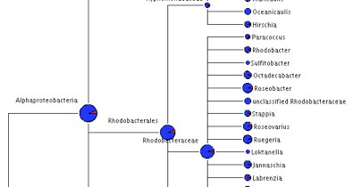

Jesse Shapiro
Symsim is a simple simulation of sympatric speciation in recombining microbial
populations. Read more...

STARRINIGHTS 12/12/2011
Jesse Shapiro
STARRInIGHTS is a computational pipeline
for inferring homologous recombination breakpoints
inpopulations of
closely related bacterial genomes.
Learn more...

SHE-RA 4/30/2010
Sonia Timberlake
SHE-RA is a tool that aligns the overlapping pair-end reads and generates composite long reads.
The algorithm is applicable to any short read sequencing
technology, and is open source.
Read more...

ANGST 3/29/2009
Lawrence David
AnGST is a software package for the inference of prokaryotic gene
family evolutionary histories.